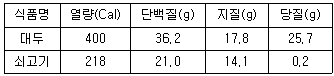
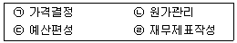
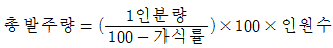
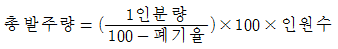
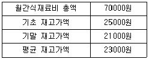

조리산업기사(공통) (2017-03-05 기출문제)
1과목: 식품위생 및 관련법규
1. 식품위생법에서 영업에 종사하지 못하는 질병의 종류가 아닌 것은?
- 화농성질환
- 피부병
- 비감염성 결핵
- 파라티푸스
(정답률: 92%)

2. 오래 사용한 법랑제 식기에서 용출될 수 있는 유해성 금속 물질은?
- 바륨
- 셀렌
- 안티몬
- 아질산
(정답률: 68%)
3. 일본에서 미강유 중독을 일으킨 원인물질은?
- 비소
- 폴리염화비페닐(PCB)
- 니트로사민
- 다이옥신
(정답률: 66%)
4. 보툴리누스균 식중독 예방대책으로 가장 거리가 먼 것은?
- 진공포장식품은 가열(120℃, 4분)하여 포자를 사멸시킨다.
- 균의 증식 위험이 있는 식품은 저온(3.3℃이하)에서 보관한다.
- 아질산나트퓸과 같은 항균제를 첨가하여 보관한다.
- 식품을 섭취하기 전 60℃에서 10분 동안 가열한다.
(정답률: 70%)
5. 식품을 부패시키는 미생물 중 중온균의 최적온도는?
- 0~5℃
- 10~15℃
- 20~25℃
- 30~35℃
(정답률: 70%)
6. 식품위생법의 무상수거대상이 아닌 것은?
- 유통 중인 부정ㆍ불량식품 검사를 위하여 수거할 때
- 수입식품 등을 검사할 목적으로 수거할 때
- 식품 등의 기준 및 규격 제정ㆍ개정을 위한 참고용으로 수거할 때
- 의심물질이 있다고 판단되어 검사항목을 추가할 때
(정답률: 82%)
7. 식품위생법의 음식 조리에 사용하는 기구에 관한 기준과 규격을 정하는 기관은?
- 농림축산식품부
- 식품의약품안전처
- 보건소
- 보건복지부
(정답률: 90%)
8. 식품 내에서 증식한 많은 양의 원인균을 섭취하여 일어나는 감염형 식중독을 나열한 것은?
- 살모넬라균 식중독, 황색포도상구균 식중독
- 살모넬라균 식중독, 장염비브리오균 식중독
- 황색포도상구균 식중독, 보툴리누스균 식중독
- 장염비브리오균 식중독, 보툴리누스균 식중독
(정답률: 74%)
9. 「식품 등의 표시기준」에 의한 용어 설명으로 틀린 것은?
- 제품명: 개개의 제품을 나타내는 고유의 명칭
- 유통기한: 제품의 제조일로부터 소비자에게 판매가 허용되는 기한
- 품질유지기한: 보존방법조건에 상관없이 고유의 품질이 유지될 수 있는 기한
- 영양성분표시: 제품의 일정량에 함유된 영양성분의 함량을 표시하는 것
(정답률: 89%)
10. 염기성 황색 색소로 과거 단무지 등에서 사용이 되었으나 현재 금지되어 있는 색소는?
- 테트라진(tetrazine)
- 아우라민(auramine)
- 로다민(rhodamine)
- 시클라메이트(cyclamate)
(정답률: 79%)
11. HACCP(식품안전관리인증기준)의 7원칙에 속하지 않는 것은?
- 위해요소 설정
- 중요관리점 결정
- 한계기준 설정
- 문서화, 기록유지방법 설정
(정답률: 65%)
12. 화학적 소독법의 구비조건이 아닌 것은?
- 석탄산계수가 낮을 것
- 임체에 대하여 독성이 없을 것
- 침투력이 강할 것
- 부식성이나 표백성이 없을 것
(정답률: 86%)
13. 「식품의 기준 및 규격」에 따른 식품접객업소 조리 식품, 조리 기구에 대한 미생물 규격으로 옳은 것은?
- 행주의 대장균은 음성이어야 한다.
- 도마의 대장균은 100/mL 이하여야 한다.
- 접객용 음용수의 대장균은 음성이어야 한다.
- 냉면육수의 대장균은 50mL에서 음성이어야 한다.
(정답률: 73%)
14. 과실류나 채소류 등 식품의 살균 목적 이외에 사용하여서는 아니 되는 살균소독제는? (단, 참깨에는 사용 금지)
- 프로피온산나트륨
- 차아염소산나트륨
- 소르빈산
- 에틸알코올
(정답률: 84%)
15. 재래식 메주를 원료로 한 된장과 간장 등에서 문제가 될 수 있는 독소는?
- 마이코톡신(mycotoxin)
- 엔테로톡신(enterotoxin)
- 아미그달린(amygdalin)
- 무스카린(muscarine)
(정답률: 67%)
16. 식품에 넣어 점성이나 안정성을 높이며 식품형태를 유지하고 기각을 좋게 하는 데 쓰이는 것은?
- 피막제
- 증점제
- 품질개량제
- 추출제
(정답률: 69%)
17. 바이러스 식중독에 대한 설명으로 틀린 것은?
- 주요 원인 바이러스는 노로바이러스 그룹이다.
- 미량의 개체로도 발병이 가능하다.
- 2차 감염으로 인해 대형 식중독으로 이어질 수 있다.
- 백식으로 예방이 된다.
(정답률: 81%)
18. 소독제의 사용 농도로 옳은 것은?
- 에틸알코올: 100%
- 석탄산: 3~5%
- 과산화수소: 35%
- 양성비누: 원액(10%)을 10배 희석
(정답률: 88%)
19. 식품을 제조ㆍ가공단계로부터 판매단계까지 각 단계별로 정보를 기록ㆍ관리하여 그 식품의 안전성 등에 문제가 발생할 경우 그 식품을 추적하여 원인을 규명하고 필요한 조치를 할 수 있도록 관리하는 것은?
- 식품 등의 표시기준
- 원산지표시
- 식품안전관리인증기준(HACCP)
- 식품이력추적관리
(정답률: 69%)
20. 내열성을 띤 enterotoxin을 생성하는 독소형 식중독균은?
- 클로스트리디움 보툴리눔균(Clostridium botulinum)
- 황색포도상구균(Staphylococcus aureus)
- 바실러스 세레우스균(Bacillus cereus)
- 클로스트리디움 퍼프린젠스균(Clostridium perfringens)
(정답률: 72%)
2과목: 식품학
21. 파스타 종류에 속하지 않는 것은?
- 스파게티
- 라자나
- 라비올리
- 리소토
(정답률: 93%)
22. 다음 식품성분표에서 단백질을 대두 50g대신 쇠고기로 대치하고자 할 때 쇠고기의 양으로 적당한 것은?

- 18.2g
- 42.0g
- 58.0g
- 86.2g
(정답률: 60%)
23. 원료의 분류가 다른 가공식품은?
- 두부
- 감자전분
- 곤약
- 당면
(정답률: 84%)
24. 나박김치 제조 시 당근을 첨가하지 않는 이유는 어떤 효소 때문인가?
- 리파아제(lipase)
- 카탈라아제(catalase)
- 폴리페놀라제(polyphenolase)
- 아스코르비나아제(ascorbinase)
(정답률: 65%)
25. 절단면에서 얄라핀(jalapin)이라는 백색 점액이 나오는 것은?
- 완두콩
- 땅콩
- 감자
- 고구마
(정답률: 89%)
26. 에르고스테롤(ergosterol)을 많이 함유하고 있는 것은?
- 당근
- 효모
- 풋고추
- 돼지고기
(정답률: 70%)
27. 필수지방산이 아닌 것은?
- 리놀레산(linoleic acid)
- 아라키돈산(arachidonic acid)
- 올레산(oleic acid)
- 리놀렌산(linolenic acid)
(정답률: 67%)
28. 버섯에 함유된 비타민 D의 전구체 물질은?
- 콜레스테롤(cholesterol)
- 레티놀(retinol)
- 에르고스테롤(ergosterol)
- 토코페롤(tocopherol)
(정답률: 85%)
29. 냉동식품에서 일어나는 변화와 관련된 설명으로 틀린 것은?
- 얼음 결정이 커지면 식품의 세포막 파괴를 초래한다.
- 냉동 중 탈수에 의해 건조된 부분은 산화로 갈변을 초래한다.
- 동결된 자유수는 해동 시 모두 단백질과 결합된다.
- 밀착포장이나 용액 침지 등의 방법으로 냉동화상을 감소시킬 수 있다.
(정답률: 82%)
30. 육류의 맛나맛 성분은?
- 젖산
- 숙신산
- 이노신산
- 구연산
(정답률: 72%)
31. 유지의 물리적 성질에 대한 내용으로 틀린 것은?
- 융점은 포화지방산이 많을수록 높아진다.
- 저급지방산이 많을수록 동일한 용매에 대한 용해도가 증가한다.
- 발연점은 유리지방산의 함량이 많을수록 높아진다.
- 점도는 불포화지방산이 많을수록 감소한다.
(정답률: 60%)
32. 유지의 자동산화에 영향을 미치는 요인이 아닌 것은?
- 유지의 불포화도
- 온도
- pH
- 광선
(정답률: 64%)
33. 탄수화물에 대한 설명 중 틀린 것은?
- 자연계에는 D-형의 알도오스(aldose)와 케토오스(ketose)가 많이 존재한다.
- 부제탄소원자를 가지고 있으므로 광학이성체가 존재한다.
- 분자 내에 하나의 수산기와 두 개 이상의 알데히드기 또는 케톤기를 가지고 있다.
- 포도당을 물에 용해시키면 우선성의 선광도를 나타낸다.
(정답률: 50%)
34. 달걀찜을 조리할 때 달걀이 응고되는 것을 설명한 내용으로 옳은 것은?
- 물을 소량 첨가하면 응고가 잘된다.
- 설탕을 소량 첨가하면 응고가 잘된다.
- 소금을 소량 첨가하면 응고가 잘된다.
- 후추를 소량 첨가하면 응고가 잘된다.
(정답률: 83%)
35. 단백질에 대한 설명으로 틀린 것은?
- 염산으로 가수분해 하면 아미노산이 생선된다.
- 아미노산은 한 분자 내에 카르복실기와 아미노기를 모두 가지고 있다.
- 아미노산들이 펩타이드결합을 하고 있다.
- 단백질을 구성하고 있는 아미노산은 대부분 D-형이다.
(정답률: 65%)
36. 비타민과 주된 급원식품의 연결이 틀린 것은?
- 비타민 A - 생선간유
- 비타민 B1 - 쌀배아
- 비타민 B12 - 콩
- 비타민 C – 과일
(정답률: 73%)
37. 결합수의 특성이 아닌 것은?
- 자유수보다 밀도가 크다.
- 대기 중에서 100℃이상으로 가열해도 제거하기 어렵다.
- 용질에 대하여 용매로서 작용한다.
- 미생물의 번식과 발아에 이용되지 못한다.
(정답률: 78%)
38. 육제품의 발색을 위하여 아질산염 등이 첨가된 가공육의 적색은?
- 니트로소미오글로빈(nitrosomyoglobin)
- 메트미오글로빈(metmyoglobin)
- 옥시미오글로빈(oxymyoglobin)
- 콜레글로빈(choleglobin)
(정답률: 70%)
39. 신선도가 떨어진 단백질 식품의 냄새성분이 아닌 것은?
- 알데히드(aldehyde)
- 피페리딘(piperidine)
- 암모니아(ammonia)
- 황화수소(H2S)
(정답률: 56%)
40. 안토시아닌 색소의 성질이 아닌 것은?
- 철(Fe) 등의 금속이온이 존재하면 청색이 된다.
- pH에 따라 색이 변하며 산성에서는 적색을 나타낸다.
- 산화효소에 의해 산화되면 갈색화가 된다.
- 담황색의 색소이며, 경수로 가열하면 황색을 나타낸다.
(정답률: 35%)
3과목: 조리이론 및 급식관리
41. 과일의 갈변을 방지하기 위한 방법이 아닌 것은?
- 데치거나 열처리하여 냉독 혹은 통조림 포장한다.
- CI-, Cu2+에 의해 갈변효소가 활성화되므로 접촉을 피한다.
- 산성용액에 담가 폴리페놀옥시다제(polyphenol oxidase)의 효소작용을 억제한다.
- 과일 건조 시 아황산가스에 노출시켜 갈변효소의 작용을 억제한다.
(정답률: 51%)
42. 채소류 조리에 대한 설명으로 옳지 않은 것은?
- 시금치나물을 무칠 때 식초를 넣으면 클로로필계 색소가 산에 의해 녹황색으로 변한다.
- 녹색채소 데친 물이 푸르게 변색되는 것은 지용성인 클로로필(chlorphyllide)로 되어 용출되기 때문이다.
- 볶은 당근이 점차 어둡고 칙칙한 색으로 변하는 것은 안토잔틴계 색소가 산소와 접촉하여 산화ㆍ퇴색하기 때문이다.
- 우엉을 삶을 때 청색으로 변하는 이유는 우엉에 있는 알칼리성 무기질이 녹아나와 안토시아닌계 색소를 청색으로 변화시키기 때문이다.
(정답률: 61%)
43. 생대두에 들어있는 특수성분이 아닌 것은?
- 글리아딘(gliadin)
- 트립신 저해제(trypsin inhibitor)
- 사포닌(saponin)
- 헤마글루티닌(hemagglutinin)
(정답률: 53%)
44. 생선조리에서 어취성분을 제거하는 방법으로 틀린 것은?
- 물로 씻어 트리메틸아민을 제거하여 비린내를 감소시킨다.
- 술의 알코올 성분이 어취와 함께 휘발하여 제거된다.
- 된장의 콜로이드 흡착을 이용하여 비린내를 감소시키낟.
- 우유의 콜라겐을 이용하여 트리메틸아민을 흡착시켜 비린내를 감소시킨다.
(정답률: 63%)
45. 급식인원 1인당 취사면적을 1.0m2, 식기 회수공가을 취사면적의 10%로 할 때 1회 300인을 수용하는 식당의 면적은?(오류 신고가 접수된 문제입니다. 반드시 정답과 해설을 확인하시기 바랍니다.)
- 100m2
- 110m2
- 300m2
- 330m2
(정답률: 52%)
46. 쌀의 조리에 대한 설명으로 맞는 것은?
- 밥을 지을 때 밤이나 감자를 섞은 경우 밥물은 쌀로만 지을 때보다 훨씬 많이 붓는다.
- 밥 짓는 물은 중성이나 약알칼리성일 때 밥맛이 좋다.
- 밥을 지을 때는 재질이 얇고 가벼운 알루미늄이 좋다.
- 밥을 지을 때 물의 양은 햅쌀의 경우 쌀 부피의 2배로 한다.
(정답률: 79%)
47. 원가계산의 목적을 모두 고른다면?

- ㉡, ㉢
- ㉠, ㉢, ㉣
- ㉠, ㉡, ㉣
- ㉠, ㉡, ㉢, ㉣
(정답률: 77%)
48. 식품구매 시 폐기율을 고려한 발주량을 구하는 식은?
- 총 발주량=1인 분량×인원 수
- 총 발주량=(100-폐기율)×100×인원 수


(정답률: 76%)
49. 어류에 대한 설명으로 맞는 것은?
- 사후경직이 끝난 생선이 신선하다.
- 붉은살 생선은 살짝 구워야 살이 부드럽고 흰살 생선은 바짝 구워야 풍미가 있다.
- 흰살 생선을 조릴 때는 양념장이 끓기 시작할 때 생선을 넣고 단시간 가열한다.
- 담수어의 비린내는 트리메틸아민 옥시드(trimethylamine oxide) 때문이다.
(정답률: 67%)
50. 조리 시 소금의 역할이 아닌 것은?
- 전분의 호화촉진
- 녹색채소의 색 향상
- 펙틴물질의 불용성 강화
- 수조육류 등의 단백질 응고
(정답률: 53%)
51. 재고자산을 평가하는 방법으로 가장 최근 단가를 이용하여, 간단하고 신속하게 산출하기 때문에 급식소에서 가장 많이 사용하는 방법은?
- 총평균법
- 실제구매가법
- 최종구매가법
- 선입선출법
(정답률: 60%)
52. 식품을 감별하는 방법으로 틀린 것은?
- 쇠고기: 선홍색을 띠고 윤기가 나며 탄력이 있어야 한다.
- 달걀: 표면이 거칠고 광택이 없어야 한다.
- 오이: 표피에 주름이 있으며 껍질이 두껍고 절단했을 때 성숙한 씨가 있어야 한다.
- 감자: 속살이 희고 모양과 크기가 고르고 껍질이 녹색을 띠지 않아야 한다.
(정답률: 81%)
53. 90℃전후에서 맛난 성분이 국물에 많이 우러나도록 하기 위해 일반적으로 사용되는 습열조리법은?
- 보일링(boiling)
- 블랜칭(blanching)
- 로스팅(roasting)
- 시머링(simmering)
(정답률: 66%)
54. 바삭하고 맛있는 튀김옷을 만드는 방법이 아닌 것은?
- 튀김옷의 밀가루는 글루텐 함량이 가장 적은 박력분을 사용한다.
- 15℃ 찬물로 반죽하면 글루텐이 적게 형성되어 바삭거리게 된다.
- 튀김옷에 소금을 첨가하면 글루텐을 연화시켜 튀김옷이 연해지고 바삭거린다.
- 튀김옷에 첨가되는 물의 1/4 정도를 달걀로 대체하면 글루텐이 덜 형성되어 바삭하게 된다.
(정답률: 63%)
55. 기름성분이 하수관으로 유입되는 것을 방지하기 위해 설치하는 배수관은?
- S 트랩
- U 트랩
- 그리스 트랩
- 드럼 트랩
(정답률: 74%)
56. 생선의 비린내를 억제하고, 조직을 단단하게 하기 위하여 사용되는 조미료는?
- 간장
- 설탕
- 소금
- 식초
(정답률: 70%)
57. 쇠고기의 대분류 중 제비추리, 안창살, 토시살 등이 포함되어 있는 부위는?
- 우둔
- 갈비
- 양지
- 등심
(정답률: 75%)
58. 조리원리를 바르게 설명한 것은?
- 인절미가 점성이 강하고 오랫동안 굳지 않도록 하기 위하여 짧은 시간 내에 치대어 주어야 한다.
- 식혜 물에 밥알이 뜰 수 있는 것은 밥에 있던 전분이 호화되었기 때문이다.
- 찹쌀가루로 만드는 경단, 화전 등을 반죽할 때는 점성이 생기도록 끊는 물로 익반죽한다.
- 찹쌀로 밥을 지을 때는 멥쌀로 지을 때보다 밥물을 많이 넣어야 한다.
(정답률: 72%)
59. 식당의 월 식재료비와 재고가액을 나타낸 표이다. 식재료의 재고회전율은 약 얼마인가?

- 1.01
- 1.51
- 2.80
- 3.04
(정답률: 47%)
60. 과일잼을 만들 때 가장 적당한 조건은?
- 펙틴 함량 0.5%, pH 2.5, 설탕량 50%
- 펙틴 함량 0.5%, pH 3.0, 설탕량 70%
- 펙틴 함량 1%, pH 3.0, 설탕량 65%
- 펙틴 함량 1%, pH 4.0, 설탕량 75%
(정답률: 78%)
4과목: 공중보건학
61. 실내공기의 오염도 판정기준으로 사용되는 대표적인 기체와 그 서한량이 바르게 짝지어진 것은?
- 이산화탄소(CO2)-0.1%
- 이산화탄소(CO2)-0.01%
- 아황산가스(SO2)-0.1%
- 아황산가스(SO2)-0.01%
(정답률: 64%)
62. 수돗물의 일반적인 정수 처리과정이 아닌 것은?
- 침전
- 여과
- 소독
- 오니처리
(정답률: 81%)
63. 사회보장제도 중 공적 부조에 해당되는 것은?
- 의료급여
- 건강보험
- 국민연금
- 고용보험
(정답률: 78%)
64. 하수의 수질측정 단위 중, 채취한 하수를 20℃에서 5일간 유기물질을 산화시키는 데 소모된 산소량으로 나타내는 것은?
- 부유물량
- 용존산소량
- 생물화학적 산소요구량
- 화학적 산소요구량
(정답률: 61%)
65. 바퀴벌레가 전파할 수 있는 질병이 아닌 것은?
- 세균성 이질
- 디프테리아
- 랩토스피라증
- 회충
(정답률: 56%)
66. 인수공통감염병이 아닌 것은?
- 돼지인플루엔자
- 탄저균
- 고병원성조류인플루엔자
- 말라리아
(정답률: 61%)
67. 체내의 수분과 염분의 손실 때문에 생기는 질병으로 고온 환경에서 심한 근육운동을 하는 경우 발생하는 질병은?
- 열경련증
- 열사병
- 열쇠약증
- 열허탈증
(정답률: 73%)
68. DPT 예방접종과 관계가 있는 감염병은?
- 디프테리아, 백일해, 파상풍
- 결핵, 폴리오, 콜레라
- 파상풍, 페스트, 홍역
- 풍진, 말라리아, 탄저
(정답률: 80%)
69. 레벨과 클라크의 질병예방대책에서 1차적 예방이 아닌 것은?
- 보건교육
- 예방접종
- 조기치료
- 건강증진
(정답률: 74%)
70. 장티푸스에 관한 설명 중 틀린 것은?
- 열병이라고도 한다.
- 닭, 오리 등의 가축을 매개로 전파된다.
- 병쾌 후에는 일반적으로 영구면역을 얻는다.
- 환경위생의 개선으로 예방할 수 있다.
(정답률: 49%)
71. 예방접종의 효과가 가장 낮다고 볼 수 있는 것은?
- 파상풍
- 디프테리아
- 결핵
- 콜레라
(정답률: 50%)
72. 병원체가 리케치아성 감염병인 것은?
- 결핵
- 홍역
- 발진열
- 콜레라
(정답률: 65%)
73. 수질오염의 지표들 가운데 수치가 높을 때 좋은 수질을 나타내는 것은?
- 용존산소(DO)
- 화학적 산소요구량(COD)
- 부유물질(SS)
- 용해성 물질(SM)
(정답률: 77%)
74. 실내에서 자연환기가 잘 이루어지는 중성대의 위치는?
- 천장 가까이
- 방바닥 가까이
- 벽면 가까이
- 실내 중앙 가까이
(정답률: 82%)
75. 호흡기계 감염병이 아닌 것은?
- 디프테리아
- 백일해
- 장티푸스
- 유행성이하선염
(정답률: 69%)
76. 면역에 대한 설명으로 옳은 것은?
- 능동면역은 다른 개체의 면역체를 받는 것이다.
- 수동면역은 항원으로 병원체를 이용하여 접종한다.
- 인공수동면역은 인공능동면역보다 효력이 빨리 나타난다.
- 인공수동면역은 인공능동면역보다 효력기간이 길다.
(정답률: 58%)
77. 대기오염 물질 중 가스(gas)상 물질이 아닌 것은?
- 황산화물(SOx)
- 질소산화물(NOx)
- 매연(smoke)
- 일산화탄소(CO)
(정답률: 67%)
78. 감각온도에 대한 내용으로 틀린 것은?
- 기온, 기습, 기류의 3인자가 종합하여 인체에 주는 온감이다.
- 체열의 방산열량과 생산열량이 같을 때 가장 적당한 온감과 쾌적감을 갖는다
- 체감온도, 실효온도라고도 한다.
- 여름철 쾌감감각온도는 17~26℃이고 겨울철은 23~26℃이다.
(정답률: 68%)
79. 화학적 소독제의 조건이 아닌 것은?
- 석탄사 계수가 높을 것
- 침투력이 강할 것
- 표백성이 없을 것
- 용해성이 낮을 것
(정답률: 68%)
80. 규폐증과 관련된 직업으로 바르게 짝지어진 것은?
- 채석공, 페인트공
- 인쇄공, 페인트공
- X선기사, 용접공
- 암석연마공, 채석공
(정답률: 84%)